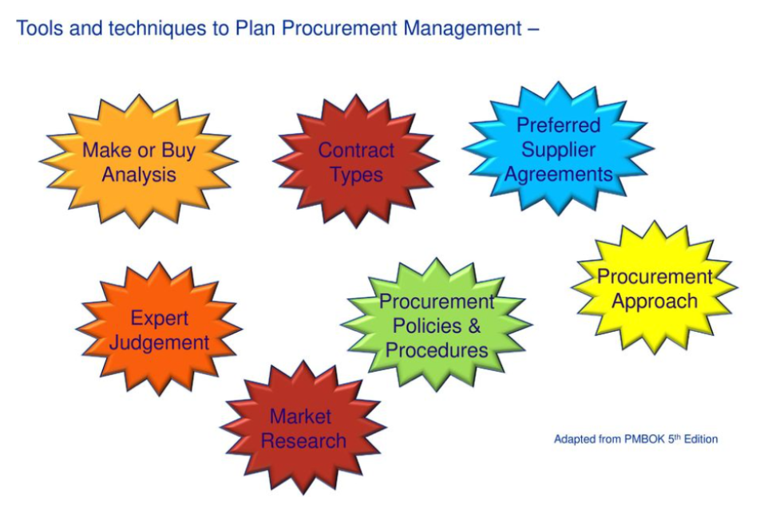

Procurement management is a critical aspect of project management that involves the acquisition of goods and services from external sources. This process requires a comprehensive plan that outlines the procurement needs of the project, the selection of vendors, and the management of contracts and relationships with suppliers. Effective procurement management is essential for project success as it ensures that the project team has the necessary resources to complete the project on time and within budget.
In this blog, we will discuss some tools and techniques for planning procurement management. These techniques will help project managers to develop a comprehensive procurement plan that meets the needs of the project.
1. Make or Buy Analysis
One of the critical decisions that project managers need to make is whether to make or buy the goods and services required for the project. A make-or-buy analysis is a tool that helps project managers to determine whether it is more cost-effective to produce the goods and services in-house or to purchase them from external vendors. A make-or-buy analysis involves evaluating the cost, quality, and time required to produce the goods and services internally versus outsourcing them to a vendor. Based on this analysis, project managers can make informed decisions on whether to make or buy the goods and services required for the project.
2. Contract Types
Project managers must select the appropriate contract type for the goods and services they need to procure. There are several types of contracts, including fixed-price contracts, cost-reimbursable contracts, and time and material contracts. Each contract type has its advantages and disadvantages, and project managers must select the most appropriate contract type based on the project's needs. For example, a fixed-price contract is suitable when the project's scope is well-defined and the risks are low, while a cost-reimbursable contract is suitable when the project's scope is unclear, and the risks are high.
3. Procurement Documents
Procurement documents are essential in the procurement process as they provide the necessary information to potential vendors about the project's requirements. Procurement documents include a request for proposal (RFP), a request for quotation (RFQ), and a request for information (RFI). A request for proposal is used to solicit proposals from potential vendors, while a request for quotation is used to solicit quotes from potential vendors. A request for information is used to gather information from potential vendors about their capabilities and experience.
4. Vendor Evaluation Criteria
Selecting the right vendor is critical in the procurement process as it ensures that the project team has access to the goods and services they need to complete the project. Vendor evaluation criteria are used to evaluate potential vendors based on specific criteria, such as cost, quality, and delivery time. Vendor evaluation criteria help project managers to make informed decisions on which vendor to select based on the project's needs.
5. Procurement Schedule
A procurement schedule is a critical component of the procurement plan as it outlines the procurement activities and the timeline for each activity. A procurement schedule includes activities such as vendor selection, contract negotiation, and contract management. A procurement schedule helps project managers to manage the procurement process efficiently and ensure that the goods and services are procured in a timely manner.
6. Procurement Budget
A procurement budget is an essential component of the procurement plan as it outlines the costs associated with procuring the goods and services required for the project. A procurement budget includes costs such as vendor fees, contract management costs, and any other costs associated with procuring goods and services. A procurement budget helps project managers to manage the project's finances efficiently and ensure that the project remains within budget.
7. Risk Management Plan
A risk management plan is an essential component of the procurement plan as it outlines the risks associated with the procurement process and the strategies for managing those risks. Risks associated with procurement include vendor non-performance, cost overruns, and project delays. A risk management plan helps project managers to identify potential risks and develop strategies to mitigate those risks.
8. Communication Plan
A communication plan is critical in the procurement process as it ensures that all stakeholders are informed of the procurement activities and the status of the procurement process. A communication plan outlines the communication channels, the frequency of communication, and the stakeholders who need to be informed. A communication plan helps project managers to manage stakeholder expectations and ensure that everyone is on the same page regarding the procurement process.
9. Performance Monitoring and Reporting
Monitoring and reporting are critical in the procurement process as they ensure that the project team has access to the goods and services they need to complete the project. Performance monitoring and reporting involve tracking the vendor's performance against the contract's terms and conditions and reporting any issues to the vendor. Performance monitoring and reporting help project managers ensure that the vendor is meeting the project's requirements and that any issues are addressed promptly.
10. Change Control Procedures
Change control procedures are essential in the procurement process as they ensure that any changes to the procurement plan are documented, evaluated, and approved. Change control procedures involve evaluating the impact of any changes on the project's schedule, budget, and scope and obtaining approval from the appropriate stakeholders before making any changes. Change control procedures help project managers to manage changes effectively and ensure that the project remains within scope, schedule, and budget.
Conclusion
In conclusion, effective procurement management is critical for project success, and project managers need to develop a comprehensive procurement plan that outlines the procurement needs of the project, the selection of vendors, and the management of contracts and relationships with suppliers. The tools and techniques discussed in this blog, such as make or buy analysis, contract types, procurement documents, vendor evaluation criteria, procurement schedule, procurement budget, risk management plan, communication plan, performance monitoring and reporting, and change control procedures, can help project managers to develop a comprehensive procurement plan that meets the needs of the project. By using these tools and techniques, project managers can make informed decisions about procurement, select the right vendors, and manage the procurement process efficiently to ensure that the project is completed on time and within budget. Effective procurement management can help to minimize risks, reduce costs, and increase the chances of project success.